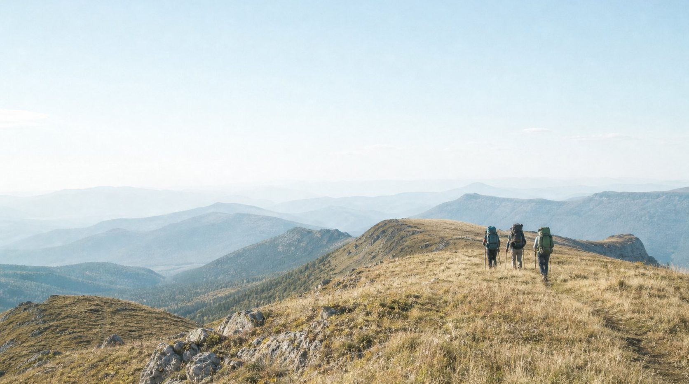
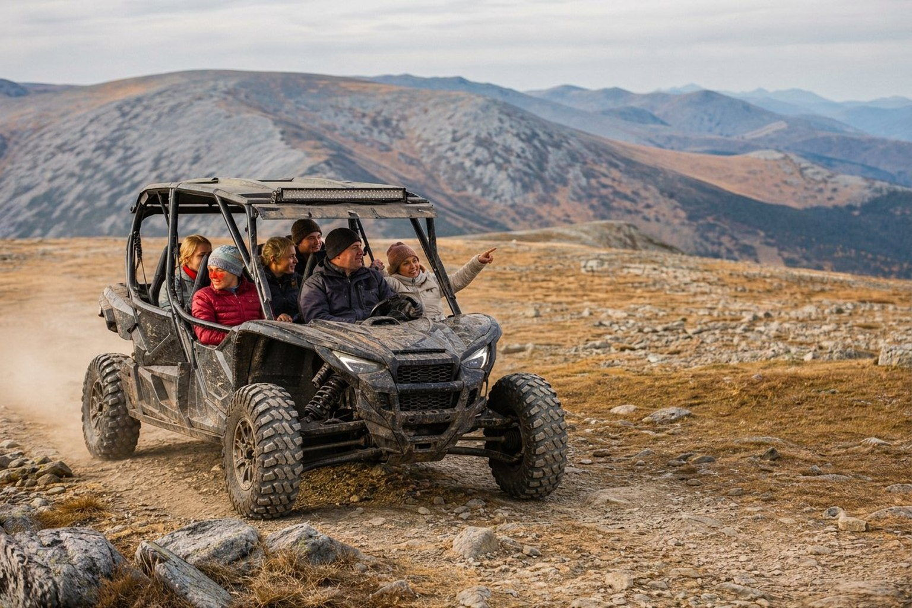
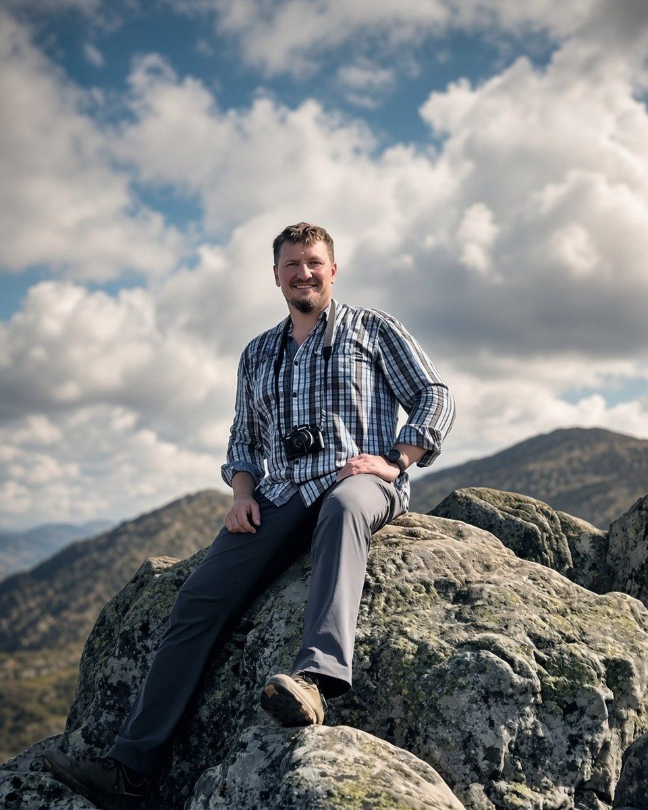
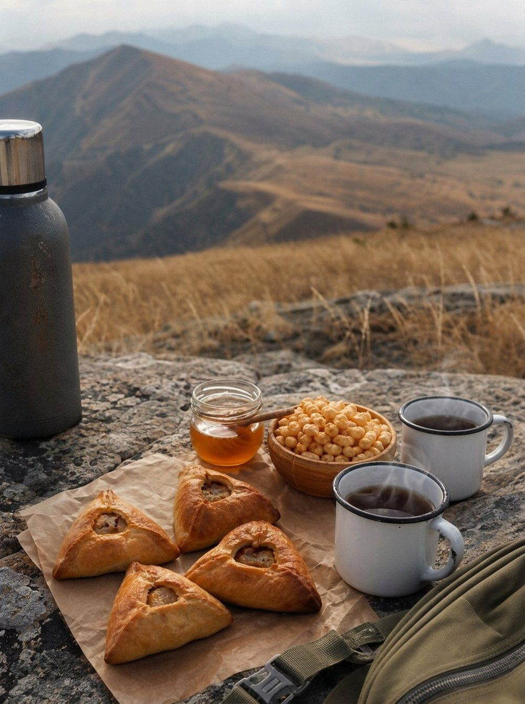

Впервые в горах
Короткий выход без экстрима. Темп подбираем по самому медленному в группе.
Поход от 1 500 ₽
Белорецк · Южный Урал · 30+ лет в горах
Белорецк стоит в кольце хребтов — и вам не нужно никуда ехать за красотой, она начинается сразу за городом. Много лет водим сюда людей. И жителей города тоже: здесь всегда есть угол, который вы ещё не видели.
Ближайшие выезды
Расписание обновляет гид вручную по звонкам. Если даты не подходят — позвоните, соберём выезд под вас.

Главный выезд · 1 день
Подвозим на квадроцикле до каменистых участков — это отдельное приключение, — дальше 6 км по горно-лесной тропе до высшей точки хребта 1 297 м. Вниз пешком — и к горячему ужину в Отнурке, он уже включён в стоимость. Шесть мест в машине.
В цену входят: дорога до Отнурка и обратно, заброска на квадроцикле, гид, горячий ужин и страховка. Дети до 5 лет не допускаются — требование безопасности техники.
Из Белорецка — от 3 650 ₽ взрослый, от 3 000 ₽ ребёнок 5–12 лет.
Из Магнитогорска — от 4 500 ₽ взрослый, от 4 000 ₽ ребёнок 5–12 лет: в цену входит дорога до Белорецка и обратно.
Магнитогорские субботы →
Кому с нами
Короткий выход без экстрима. Темп подбираем по самому медленному в группе.
Поход от 1 500 ₽Квадро с ребёнком-пассажиром: детский билет от 3 000 ₽. До 5 лет не берём.
Заброска на квадроциклеВыезд на 5 человек — тот же квадро-маршрут, но своей компанией.
Ближайшие датыПриехали на выходные? Встречаем в городе, возвращаем туда же к вечеру.
Как это работаетСоберём выезд под ваш состав: маршрут, время и состав группы.
Обсудить по телефонуМногодневные туры
Приехали в отпуск или на несколько дней — соберём программу с ночёвками. Ведёт Андрей лично, база в Белорецке, транспорт и снаряжение на нас.
Два дня, чтобы влюбиться. Лесные тропы, кварцитовые останцы и Каменная река — спокойное знакомство с горами для тех, кто здесь впервые.
Программа и бронь→ 2 дняДень на камне, день на воде. Синие скалы и Арская скала сверху, сплав по Белой снизу — Урал с двух сторон.
Программа и бронь→ 3 дняОткрытые хребты и каменные зубья. Ялангас с обзором на 360°, Инзерские Зубчатки и Айгир — самый насыщенный тур.
Программа и бронь→ 7 днейНеделя радиальных выходов из одной базы в Белорецке: Малиновая, Каменная река, Ялангас, сплав, Зубчатки, Синие скалы. Прожить Урал, а не проехать.
Программа и бронь→Программу собираем под вас — даты, темп и ночёвки обсуждаем по телефону. Цену называем до записи. Для компаний и семей делаем отдельный вариант.

Организатор
Основатель «АйДа! Белорецк» · гид-инструктор с аттестацией и лицензией
Все походы на этом сайте ведёт он лично. Не менеджер по телефону и не подрядчик со стороны — человек, который сам выбирает тропу, сам проверяет погоду и сам идёт с вами.
Аттестованный гид-инструктор с лицензией: маршруты, безопасность и снаряжение — не по наитию, а по правилам, которым его учили и которые он подтверждает. За плечами — пик Ленина, 7 134 метра. Когда звоните, вы говорите именно с ним: он же потом и поведёт вас в горы.
Безопасность и забота
Горы не прощают небрежности. Всё, что можно предусмотреть заранее, — предусмотрено.
Оформляем сами и включаем в цену. Случится что — вы не один.
На маршруте он с вами: подскажет, подстрахует, подождёт.
Рации у гидов, телефон в зоне приёма, контакт для близких.
Собираем под маршрут и возраст, включая детские препараты.
Опасно — перенесём выезд. Деньги остаются при вас.
До 5 лет на квадроциклы не берём: это техника, а не аттракцион.
И самое простое: перед выездом мы разговариваем. Лучше пять минут вопросов, чем сюрпризы на маршруте. Позвонить и спросить →
Направления
Три пеших маршрута, заброска на квадроцикле и день на воде. Все начинаются в Белорецке и заканчиваются дома к ужину. Выберите по силам — а дальше уже наша работа.

Подниметесь — и увидите Урал таким, каким его рисуют в книжках: хребет за хребтом, до самой синей дымки на горизонте. Ветер, чай из термоса и чувство, что вы добрались до самого края.

Каменные зубцы стоят над долиной, как декорации к сказке. Тропа идёт лесом, потом курумником — и вдруг разом открывается Инзер, заповедник и стены высотой с шестнадцатиэтажку.

Тот редкий маршрут, после которого хочется не «я смог», а «как же тут хорошо». Пологий подъём, тёплая трава, розовые кварциты на вершине и дети, которые обгоняют взрослых.
 с мая
с мая
Арский камень → Азапкина поляна. Тот формат, где не надо никуда лезть: только вода, скалы по берегам и день, в котором никуда не спешишь.

новоеТот же маршрут, но с отдельным гастрономическим привалом. Программа собирается под запрос.
Все маршруты начинаются в Белорецке и там же заканчиваются в тот же день. Не нужен отпуск, не нужна гостиница, не нужно брать неделю — на этом и построены наши однодневные выезды.
Социальное доказательство
«Взяли квадроциклы с сыном 7 лет. Думала, испугается — а он всю дорогу махал вслед. Гид объяснил всё заранее и в конце дороги проверил, что мы доехали нормально.»
«Приехали из Магнитогорска на выходные, первый раз в Белорецке. Встретили прямо в городе, показали всё, на вершине — привал с чаем. Не ожидал, что поход может быть настолько спокойным.»
«Ходили компанией 6 человек — весь квадро забрали. Всё назвали по телефону заранее, без сюрпризов. В следующий раз придём на сплав.»
«Наконец добрались до этого прекрасного уголка нашей Башкирии. Думали, придётся ехать далеко и готовиться неделю — а выехали утром из Уфы, к вечеру уже смотрели на горы с вершины. Гид Андрей провёл так, что ни разу не было страшно.»
«Всю жизнь живу в Белорецке — и не знала, сколько красоты рядом. Ходили на Яндык всем женским составом: подъём мягкий, разговорились, наверху пили чай и смотрели на свой город сверху. Теперь хочу на Айгир.»
Отзывы собраны из переписки и сообщества ВК. Здесь появятся новые — с фотоотчётами из походов.
Вопросы
Не нашли свой вопрос — позвоните, ответим за 15 минут в рабочее время.
ПозвонитьОднодневный пеший поход — от 1 500 ₽ с человека. Выезд с заброской на квадроцикле к Ялангасу — от 3 650 ₽ за взрослого и от 3 000 ₽ за ребёнка 5–12 лет. Цену называем до записи: в разговоре и здесь, на сайте.
С 5 лет. Дети до 5 лет на квадроциклы не допускаются — это требование безопасности техники, а не наша прихоть. С 5 до 12 лет ребёнок едет пассажиром со взрослым: детский билет от 3 000 ₽, взрослый — от 3 650 ₽.
Все поездки начинаются в Белорецке. Точку и время встречи подтверждаем по телефону за день до выезда. Квадро-тур стартует в 07:45 с автовокзала Белорецка и возвращается к 19:00. Время сбора для пеших походов подтверждаем по телефону.
В квадро-туре: дорога до Отнурка и обратно, заброска на квадроцикле, гид, горячий ужин в Отнурке и страховка. В пеших походах: гид, транспорт на маршруте, страховка, привал с чаем и перекусом. Питание на маршруте обсуждаем отдельно — у нас бывает и полноценный ужин в горах. Личное снаряжение — по списку, который отправляем после записи.
Да. Гид подбирает темп по самому медленному в группе, на сложных участках идёт рядом. Если вы сомневаетесь — скажите об этом при звонке, мы предложим маршрут легче.
Смотрим прогноз и состояние тропы. Если выход небезопасен — звоним заранее, предлагаем перенос или другой маршрут. Оплату в этом случае переносим на новую дату без потери.
Да: от двух до семи дней. «Первые горы Урала» и «Скалы и река» — на два дня, «Большой Урал» — на три, «Горная неделя» — на семь. База в Белорецке, программа собирается под ваши даты и состав группы. Цену называем до записи.
Андрей Иванович — основатель «АйДа! Белорецк», аттестованный гид-инструктор с лицензией. Он лично ведёт каждый выезд: и однодневные, и многодневные. В его опыте — восхождение на пик Ленина, 7 134 метра. Когда звоните, вы говорите именно с ним.
Позвоните — соберём состав группы за две минуты, проверим свободные места и назовём итоговую сумму. Деньги передаёте перед выездом в Белорецке. Предоплату не берём.
Бронирование по телефону
Скажите дату и сколько вас. Проверим свободные места, назовём точную сумму до записи и встречу в Белорецке.
Без предоплаты. Деньги передаёте перед выездом в городе.